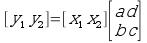
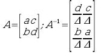

:: Crittografia - Lezione del 5 marzo 2008 ::
Torna alla pagina di Crittografia
Cifrario affine
Si tratta di un cifrario a sostituzione, in cui un simbolo è sostituito da un altro simbolo. Per trovare la sostituzione si utilizza un'equazione:
ci = E(pi) = (k1p1 + k2) mod 26
Ci sono quindi due costanti, k1 e k2.
La decrittazione invece seguirà questa formula:
pi = D(Ci) = (c1 - k2) * k1-1 mod 26
Il k1-1 sta a significare che devo prendere l'inverso in modulo 26 del valore k1. L'inverso di un numero è quel numero che, moltiplicato per il primo numero, dà i numeri, anzi dà 1. L'inverso in modulo è la stessa cosa, solo che deve dare 1 in quella classe di resto. La nostra classe di resto ovviamente è 26.
Ecco quindi che se k1 è7, il suo inverso è 15: 7 * 15 ≡ 1 mod 26.
---> Escursus Citrinico
Per trovare l'inverso di un numero in una certa classe di resto si adopera la formula di Euclide. Innanzitutto, in una certa classe di resto un numero ha l'inverso se è coprimo con la n di quella classe. Quindi, il nostro k1 deve essere primo con 26.
Quando è verificata questa condizione, il teorema di Eulero mi dice che
l'inverso di a è aϕ(n)-1
dove ϕ(n) è il toziente o numero di Eulero di a. Confusi? Anch'io.
Il numero di Eulero di a è il numero di interi che sono minori di a, e primi con esso. Per un numero p primo, è ovvio che ϕ(p) = p - 1, proprio perché è primo e non ha divisori tranne se stesso e 1.
Se invece ho 2 numeri primi, p e q, con p ≠ q, allora ϕ(p x q) = (p - 1)(q - 1). La dimostrazione la ometto, tanto mi credete.
Fine Escursus Citrinico <---
Il cifrario affine è comunque monoalfabetico, perché un carattere è mappato ad un altro unico carattere. Per complicarlo un po' si possono usare più alfabeti cifranti, oppure usare più lettere per volta nella cifratura.
Cifrario di Leon Battista Alberti
Felon Gattista Alberti nel 1403 usa più alfabeti cifranti, in pratica un cifrario polialfabetico, secondo questa regola:
lettere pari cifrate dal 1° alfabeto
lettere dispari cifrate dal 2° alfabeto
Cade la relazione biunivoca tra lettere del testo in chiaro e lettere del testo cifrato.
Giovanni Battista Porta
Giovanni Gattista Porta invece di cifrare le lettere cifra i digrammi, cioè gruppi di due lettere per volta => è una cigra a gruppi. Ogni digramma è poi assegnato ad un numero, e la chiave consiste nella tabella:
A B C D ....
A 1 2 3 4 ....
B 27 28 29 30 ...
.................
AA = 1, AB = 2 e così via. Oppure uso simboli strani al posto dei numeri, o quello che voglio. La chiave rimane sempre la tabella, composta da 26 x 26 = 676 simboli.
Cifrario di Playfair
Ho una tabella 5x5, in cui metto le lettere dell'alfabeto in un ordine casuale. La I viene accorpata alla J per ottenere appunto il 5x5.
Poi, mi metto a cifrare digrammi.
Prendo la prima lettera del digramma, e la seconda, e considero il rettangolo formato da queste due lettere, considerandole come estremi di una diagonale di questo rettangolo. Una lettera viene quindi cifrata con quella che appare all'altro capo del lato del rettangolo su cui si trova.
Se due lettere sono sulla stessa riga, la loro crittazione si ottiene shiftandole a destra di 1. Se sono sulla stessa colonna, le shifto di 1 sotto.
Non fatemi fare un disegno che non ne ho voglia!:)
La struttura del testo, nonostante questo daffare, rimane, e si può usare ancora un attacco statistico basato sulla frequenza dei digrammi.
Cifrario di Hill
Lester Hill nel 1929 inventa il suo cifrario, basato su m-grammi (neologismo da me inventato). Per cifrare m lettere, uso m equazioni lineari.
Nell'esempio consideriamo m = 2, e quindi 2 equazioni lineari.
y^_1_^ = ax1 + bx^_2_^ mod 26
y^_2_^ = cx1 + dx^_2_^ mod 26
Ho quindi che x^_1_^ diventa y^_1_^, e x^_2_^ diventa y^_2_^.
Un altro modo per scrivere la stessa roba è

Si tratta di un conto da eseguire riga per colonna: riga per colonna 1, riga per colonna 2: vettore per matrice.
Più la m è grossa, più ho matricione grosse. La chiave è quindi la matrice, e per decrittare devo usare la matrice inversa. La Citrini ritorna qui in campo...
---> Escursus Citrinico
La matrice inversa di A è A-1, ed è quella matrice che moltiplicata per A mi dà la matrice I, quella che è composta da tutti 0 e da 1 sulla diagonale principale. L'inversa di A esiste solo se il determinante di A è diverso da 0.
Il determinante di una 2 x 2 si trova facendo il prodotto degli elementi della diagonale principale, meno il prodotto degli elementi sull'altra diagonale. Nella matrice di prima, con la prima riga = a c e la seconda riga = b d, il determinante è ad - cb.
OCIO che in genere è la prima riga ad essere a b!!!
Per calcolare la matrice inversa, si può usare generalmente il metodo di Gauss - Jordan, ma non ne voglio parlare qui.
La matrica inversa di una matrice 2 x 2 si ottiene in modo un po' più semplice. Trovato il mio determinante, devo:
- invertire i numeri sulla diagonale principale
- dividere tutti i numeri per il determinante

Fine Escursus Citrinico <---
Vigenere
È un cifrario polialfabetico che non fu inventato da Vigenere ma da Giovan Gattista Belaso. I Gattista la fanno da padrone, a quanto pare, nella crittografia classica.
Si tratta di applicare una cifra di Cesare ad ogni lettera del testo in chiaro, cioè uno shift. L'entità dello shift dipende dalla chiave, e dalla posizione nel testo. L'esempio chiarirà tutto.
testo in chiaro: CIAO DA ME CHE SONO IO
password: DARIO
CIAO DA ME CHE SONO IO +
DARI OD AR IOD ARIO DA =
--------------------------
FIRW RD MV KVH SFVC LO
Resiste all'analisi delle frequenze, ma ci sono altre cose interessanti che possono rompere questo cifrario.
Per un'implementazione, vedi la pagina di Dario
Trasposizioni
Invece di sostituire caratteri, li sposto all'interno del testo. I metodi sono molteplici.
Rail fence
Se il testo in chiaro è CIAO DA ME CHE SONO IO, lo scrivo come su una staccionata, uno su uno giù:
C A D M C E O O O
I O A E H S N I
e leggo poi in riga: CADMCEOOOIOAEHSNI.
La chiave è il numero di colonne della mia staccionata. Qui so che ho 9 colonne, quindi scrivo i primi 9 caratteri, e sotto i secondi 9, e poi sotto ancora gli eventuali terzi 9 etc. e infine leggo di colonna in colonna.
Cifrario a colonne
Variazione del Rail Fence.
Stabilisco un numero n di colonne, e scrivo il mio messaggio in righe composte da n colonne. Quando lo trascrivo, però, non leggo le colonne in fila, ma le sposto, e la chiave è quindi composta, oltre che dal numero di colonne, anche dalla loro sequenza.
Cifrario a trasposizione
È basato sulle permutazioni, ora vedremo perché.
Divido il mio testo in chiaro in blocchi di n caratteri. Poi, stabilisco una funzione bijettiva per cui ognuno degli n caratteri finisce in una e una sola posizione tra quegli n, e viceversa.
Se la parola è gatto, e stabilisco che:
1 -> 2
2 -> 1
3 -> 5
4 -> 4
5 -> 3
allora avrei:
G -> 2
A -> 1
T -> 5
T -> 4
O -> 3
=> AGOTT
Notare che la trasposizione è bijettiva, cioè se a va in b, allora b va in a. Altrimenti non ne esco più:)
Torna alla pagina di Crittografia